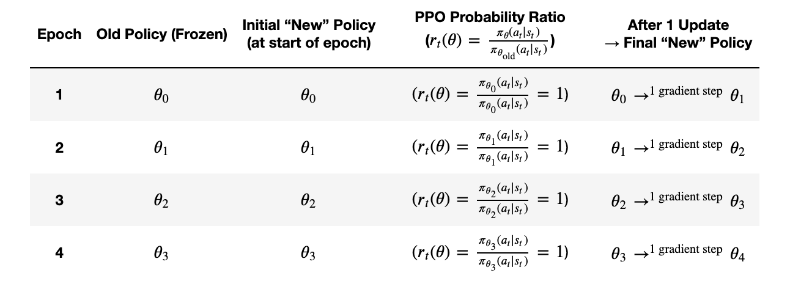
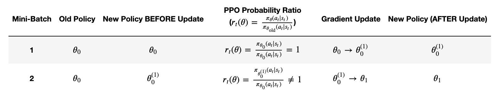
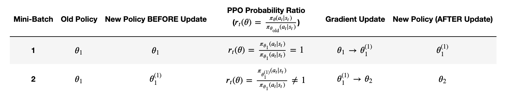

# Install required packages
!pip install -q --upgrade transformers datasets
!pip install -q trl==0.10.1 #install downgraded version because it's easier to use! 
Reinforcement Learning for LLM’s
In this notebook, we’ll dive deep into how LLM’s are trained using reinforcement learning, exploring how we can implement this type of training on an existing, small model to better guide our desired responses!
What is reinforcement learning?
In a typical LLM training paradigm, models are first trained in an self-supervised manner to predict a masked-out word. This makes them great at understanding how language is constructed, and helps us to make giant datasets very easily.
However, models trained to simply predict what word comes next are not very helpful to talk to. If I ask a model trained in this manner “What kind of tree is a cedar?” It may respond “I would really like to know about cedar trees.” because it thinks it should be continuing the thought.
The next step, then, in LLM training, is typically instruction fine tuning (IFT). In this step, models are trained to respond and follow instructions. In this step, they come to recognize when they are being asked a question, and the language produced thereafter becomes a response not simply a continuation. After IFT, a model might respond: “coniferous”
The model now answers the question (hopefully correctly.) But it may not be friendly, or be too terse, or not structure its answers particularly well, or even be mean and harmful. So, the last step in training is typically reinforcement learning from human feedback (RLHF, or just RL). In this step, the model is told what responses of its are better and encouraged to respond in that type of way. While this can adjust the responses in many ways, one example is that it may encourage more information or detail, or generally more wordiness. So, a model trained with RL may respond “A cedar is a type of coniferous tree in the genus Cedrus. Cedars are evergreen trees known for their aromatic wood, needle-like leaves, and cones. They belong to the family Pinaceae.”
📌 Note: A great textbook on reinforcement learning is Reinforcement Learning: An Introduction. I highly reccommend referencing it if, after or during this tutorial, you find yourself wanting an even deeper dive into some of these concepts.
0. Setup and Introduction
Before we get any deeper and start writing code, let’s install our necessary packages and import dependencies:
Installations and Imports
(If the below imports fail, you may need to restart the kernel for those installations to take effect).
# Basic imports
import torch
from transformers import AutoModelForCausalLM, AutoTokenizer, BitsAndBytesConfig
from trl import AutoModelForCausalLMWithValueHead, PPOConfig, PPOTrainer
import numpy as np
import math
from datasets import Dataset
import warnings
import re
from typing import Dict, List, Tuple
from collections import defaultdict
from transformers import GPT2Tokenizer
import random
warnings.filterwarnings('ignore')If you have access to it, a GPU runtime will make this code run smoother (or might make it possible to run at all!)
The below code will confirm if you’re on a GPU. You want to see CUDA available: True
It’s not required, but preferred. A stronger CPU might be required.
# Check PyTorch version and CUDA availability
print(f"PyTorch version: {torch.__version__}")
print(f"CUDA available: {torch.cuda.is_available()}")
if torch.cuda.is_available():
print(f"CUDA device: {torch.cuda.get_device_name(0)}")
print(f"Available GPU memory: {torch.cuda.get_device_properties(0).total_memory / 1024**3:.2f} GB")PyTorch version: 2.5.1+cu124
CUDA available: False(OPTIONAL) Hugging Face Authentication
Later in this notebook, we’ll be grabbing a model off of huggingface. While the one we use here doesn’t require a token, you can add your token here if you want to experiment with swapping GPT-2 for a different model that needs authentication.
from huggingface_hub import login
import getpass
token = getpass.getpass("Enter your Hugging Face token: ")
# Verify login
print("Login status: Authenticated with Hugging Face")Login status: Authenticated with Hugging FaceAn Introduction: From Traditional Training to Reinforcement Learning
Before we get started, let’s talk about what exactly the goals of RL are, how it differs from “traditional” training, and get a basic understanding of the RL pipeline.
Traditional Training: A Quick Review
In “traditional”, supervised training of a transformer or neural network, which you’re likely familiar with, the process looks like this:
- You have training data with inputs and known correct outputs
- The model makes predictions
- You calculate a loss function (like MSE or cross-entropy) that measures how wrong the predictions are
- Backpropagation updates the weights to minimize this loss
- Repeat until the model gets good at predicting correct outputs
The key here is that for every input, you know exactly what the correct output should be.
But what if you don’t know the exact right answer? What if you just know when answers are “better” or “worse”? This is where reinforcement learning comes in.
Consider training an LLM to be helpful and truthful. There’s no single “correct” response to a prompt - there might be many good responses and many bad ones. We can’t use traditional supervised learning because: - We don’t have examples of perfect responses - Multiple very different responses might be equally good - We care about abstract qualities (helpfulness, truthfulness) more than exact word matches
Enter Reinforcement Learning
RL approaches this differently:
- Instead of a loss function that measures “wrongness”, we use a reward function that measures “goodness”
- Instead of comparing to correct answers, we try different outputs and see which get higher rewards
- Instead of direct supervision, the model learns through trial and error
RL requires, at a high level:
1. Generation Phase - Model receives a prompt - Model generates multiple different possible responses - This is called “exploring” the space of possible outputs
2. Evaluation Phase - Each generated response gets a reward score - Better responses = higher rewards - This tells us which outputs we want to encourage
3. Learning Phase - Model is updated to make high-reward outputs more likely - But, it doesn’t memorize specific outputs - Instead, it learns patterns that tend to lead to high rewards
4. Repeat - Generate new responses - Evaluate them - Learn from the results - Over time, the model gets better at generating high-reward outputs
Some Key Differences from Traditional Training
1. Exploration vs Exploitation - The model needs to try new things (explore) to find better strategies - But it also needs to use what it knows works (exploit) - This “exploration-exploitation tradeoff” doesn’t exist in traditional training
2. Delayed Rewards - Sometimes we don’t know if an output was good until several steps later - The model needs to learn which actions led to good outcomes - This is very different from immediate feedback in traditional training
3. Moving Targets - As the model improves, it generates different outputs - These new outputs might get different rewards - So, the learning process is more dynamic than traditional fixed-dataset training
1. The Reward Function
We’ve just talked a lot about a reward function, which is the cornerstone of reinforcement learning. Now, let’s dive into exactly what a reward function looks like and implement one ourselves.
Defining the Reward Function
So, what is a reward function? In reality, it can take many forms. But in general, a reward function needs to be:
- Clear: It should have a well-defined relationship between output quality and some numerical score
- Consistent: Similar outputs should get similar rewards
- Meaningful: Higher rewards should genuinely represent better outputs
- Computationally Feasible: As we need to calculate rewards for many outputs quickly
Reward functions can also incorportate negative rewards for behaviors that the model wants to explicitly avoid.
A (Very) Simple Example
Let’s just start with a very basic example to illustrate what a simple reward function could be. Below, we’ll write a “positive sentiment” reward function that counts how many positive and negative words were used in a response, giving positive rewards for positive words, and negative rewards for negative words.
# Simple reward function
def sentiment_reward(text: str) -> float:
positive_words = ['good', 'great', 'excellent', 'wonderful', 'amazing']
negative_words = ['bad', 'awful', 'terrible']
words = text.lower().split()
positive_count = sum(1 for word in words if word in positive_words)
negative_count = sum(1 for word in words if word in negative_words)
return positive_count - negative_count
# Test our reward function with some example sentences
test_texts = [
"This is a good and great day",
"Nothing particularily special happened today, but I was still satisfied",
"Everything was absolutely amazing and wonderful at first, then terrible and bad and awful later",
"Good wow great amazing excellent stuff, wow great and good and great"
]
print("\nTesting reward function:")
for text in test_texts:
print(f"\nText: {text}")
print(f"Reward: {sentiment_reward(text):.2f}")
Testing reward function:
Text: This is a good and great day
Reward: 2.00
Text: Nothing particularily special happened today, but I was still satisfied
Reward: 0.00
Text: Everything was absolutely amazing and wonderful at first, then terrible and bad and awful later
Reward: -1.00
Text: Good wow great amazing excellent stuff, wow great and good and great
Reward: 7.00So, we can see that the above, while likely far too simple to actually be useful, counts as a reward function, as it meets our criteria and provides some way to understand “better” responses.
This reward function clearly meets the requirements of: 1. Clear relationship: More positive words = higher score 2. Fast to compute: Simple word counting is very efficient 3. Easy to understand: The logic is straightforward
However, we can point out some clear reasons that this would be an unuseful reward function in practice: 1. Easy to game: Model could just repeat positive words 2. Misses context: “Not good” counts as positive 3. Ignores quality: Well-written neutral text scores lower than poorly written positive text (see second example vs last)
So, a good reward function should take more into account when deciding if a whole response is good or not.
One Step Better: Adding Context
Let’s improve our reward function by considering context. We’ll: 1. Account for negations 2. Consider word positioning 3. Add penalties for repetition
(We’ll also, just for simplicity sake, move this to be positive-detecting only, no negative rewards)
# Improved reward function with context awareness
def positivity_reward(text: str) -> float:
# We'll keep the same (extremely incomplete) word list
positive_words = ['good', 'great', 'excellent', 'wonderful', 'amazing']
words = text.lower().split()
score = 0.0
# Check for negations (looking at pairs of words)
for i in range(len(words)):
if words[i] in positive_words:
# Check if previous word is a negation
if i > 0 and words[i-1] in {'not', 'never', "don't", 'no'}:
score -= 0.5 # Penalty for negated positive words
else:
score += 1.0
# Penalty for repetition
unique_words = len(set(words))
repetition_penalty = unique_words / max(len(words), 1)
# Calculate final score with penalties
final_score = (score / max(len(words), 1)) * repetition_penalty
# Clip to range [0, 1]
return max(min(final_score, 1.0), 0.0)
# Test the improved function
test_texts = [
"This is good and helpful.",
"This is not good at all.",
"good good good good good",
"The explanation was clear and helpful, making it incredibly beneficial."
]
print("Testing our improved reward function:")
for text in test_texts:
reward = positivity_reward(text)
print(f"\nText: {text}")
print(f"Reward: {reward:.3f}")Testing our improved reward function:
Text: This is good and helpful.
Reward: 0.200
Text: This is not good at all.
Reward: 0.000
Text: good good good good good
Reward: 0.200
Text: The explanation was clear and helpful, making it incredibly beneficial.
Reward: 0.000So, we’ve definitely improved things! But you can see how easy pitfalls are. The last example was definitely positive in tone, but that’s not accounted for here. We could add “clear”, “helpful” and “beneficial” to our positive words list, but then how many words would need to be added just because sometimes, in the right context, they are positive? Perhaps “incredibly” is the thing giving this sentence a positive connotation, but then that could also be used to say something is “incredibly” negative.
You can see how reward functions we use in practice require some careful considerations.
Real-World Reward Functions
In practice, good reward functions for LLMs often combine multiple components, as there are a lot of factors to consider when deeming a response as “good”:
1. Quality Metrics measure for things like grammar and fluency, relevance of the response to the given prompt, factual accuracy, and overall coherence and structure.
2. Task-Specific Metrics measure for things like format adherence, style matching, any domain-specific requirements, and length constraints
3. Safety and Alignment Metrics include toxicity detection and bias measurements, and check for things like truthfulness and helpfulness.
A More Practical Reward Function
Let’s see how we can implement some of those metrics above and build a (still very basic, but more realistic) reward function that would be more useful in practice than our “positive words” detection.
def calculate_rewards(prompt: str, response: str) -> Dict[str, float]:
"""
Calculate multiple reward components for a given response.
Returns a dictionary of different reward aspects.
"""
rewards = {}
# 1. Response Length Reward
# Encourage responses between 50 and 500 words
words = response.split()
word_count = len(words)
length_reward = min(1.0, word_count / 50.0) if word_count < 50 else \
1.0 if 50 <= word_count <= 500 else \
max(0.0, 1.0 - (word_count - 500) / 500)
rewards['length'] = length_reward
# 2. Prompt Relevance Reward
# Check if response uses key terms from prompt
prompt_words = set(prompt.lower().split())
response_words = set(response.lower().split())
overlap = len(prompt_words.intersection(response_words))
relevance_reward = min(1.0, overlap / max(len(prompt_words), 1))
rewards['relevance'] = relevance_reward
# 3. Format Quality Reward
# Check for good formatting practices
format_scores = []
# Has paragraphs
format_scores.append(1.0 if response.count('\n\n') > 0 else 0.0)
# Uses punctuation properly
format_scores.append(1.0 if re.search(r'[.!?]\s+[A-Z]', response) else 0.0)
# Proper capitalization
format_scores.append(1.0 if re.search(r'^[A-Z]', response) else 0.0)
rewards['formatting'] = sum(format_scores) / len(format_scores)
# 4. Calculate Final Combined Reward
weights = {'length': 0.2, 'relevance': 0.5, 'formatting': 0.3}
final_reward = sum(rewards[k] * weights[k] for k in weights)
rewards['final'] = final_reward
return rewards
# Let's test our practical reward function
test_cases = [
{
"prompt": "Explain how photosynthesis works.",
"response": """
Photosynthesis is the process by which plants convert sunlight into energy.
The process involves chlorophyll in the leaves capturing sunlight. This energy
is used to convert water and carbon dioxide into glucose and oxygen.
Plants use glucose for energy and release oxygen as a byproduct.
"""
},
{
"prompt": "Explain how photosynthesis works.",
"response": "plants make food from sun"
}
]
for case in test_cases:
rewards = calculate_rewards(case["prompt"], case["response"])
print(f"\nPrompt: {case['prompt']}")
print(f"Response: {case['response']}")
print("\nRewards:")
for aspect, score in rewards.items():
print(f"{aspect}: {score:.3f}")
Prompt: Explain how photosynthesis works.
Response:
Photosynthesis is the process by which plants convert sunlight into energy.
The process involves chlorophyll in the leaves capturing sunlight. This energy
is used to convert water and carbon dioxide into glucose and oxygen.
Plants use glucose for energy and release oxygen as a byproduct.
Rewards:
length: 0.900
relevance: 0.250
formatting: 0.667
final: 0.505
Prompt: Explain how photosynthesis works.
Response: plants make food from sun
Rewards:
length: 0.100
relevance: 0.000
formatting: 0.000
final: 0.020Key Takeaways About Reward Functions
So, when making practical reward functions, there are multiple ways to make a reward function better, including (but not necessarily limited to):
- adding multiple reward components help avoid gaming the system
- using weighted combinations allow prioritizing different target metrics
- defining clear relationships between quality and reward score
Some very common pitfalls to keep in mind: - Reward Hacking: some rewards are easily maximized by doing something very simple, not actually increasing quality - Unclear Signaling: it can be difficult to make rewards that very clearly, concretely determine “goodness” - Computational Overhead: Complex rewards can obviously be helpful in targeting rich, high-quality results, BUT can slow down training significantly - Inconsistent Scaling: Be sure to normalize and weight any scores that are combined appropriately.
2. Proximal Policy Optimization (PPO)
So, we’ve defined a reward function that we want to use to inform the model how to answer. But how do we use it?
The simplest thing we could think to do might be to just turn that somehow into a loss to minimize and give examples to our model, like traditional training.
But this wouldn’t work! A lot more care and nuance is needed for something like reinforcement learning.
The Challenge with RL for LLMs
When training an LLM with RL, we face several unique challenges that mean we must make our updates carefully.
Catastrophic Updates: If we make too large a change to the model based on rewards, we risk losing the model’s existing knowledge or ability to generate coherent text, and can easily get stuck in local optima (like repeating high-reward words)
Discrete Actions: During text generation, an LLM model repeatedly chooses from a vocabulary of discrete tokens. As such, a single “action” (generating text) involves many individual, discrete actions (choosing the next token), making it harder to know which “choices” led to good or bad outcomes.
Enter PPO
PPO (Proximal Policy Optimization) is a technique for training the model in a way that moves towards maximizing our reward, but slowly and carefully.
In PPO, a ‘policy’ refers to the model’s strategy for generating outputs—in an LLM’s case, how it predicts and constructs sentences token by token (basically, the model itself). An ‘old policy’ is the model as it currently functions, and a ‘new policy’ is an updated version that tries to generate outputs more aligned with the reward signal. PPO carefully balances exploration (trying new strategies) with stability by limiting how far the new policy is allowed to deviate from the old one. This ensures gradual, meaningful improvements without destabilizing the models ability to generate coherent text.
Key Components of PPO
- The Policy (π): In our case, this is our language model. It has two key behaviors:
- Acting: Generating text given a prompt
- Calculating Probabilities: Telling us how likely it would be to generate specific text
- The Clipped Objective: This is PPO’s real metric for improvement. It includes:
- Probability Ratio (r): How much more/less likely is the new policy to generate certain text compared to the old policy?
- Clipping: We put boundaries on this ratio (typically between 0.8 and 1.2)
- Advantage (A): How much better/worse was the outcome than expected?
For LLM’s, PPO is implemented on a token-by-token basis, so each token gets the opportunity to be better or worse for the outcome. In this way, PPO is not exactly a loss function but uses a surrogate objective (a type of loss function) to guide updates. It incorporates the reward by comparing the new policy’s performance (via probabilities of actions, i.e., token predictions) to the old policy’s performance, scaled by the reward.
The PPO Mathematically
Of course, how the PPO is implemented in practice is through that clipped objective function.
The PPO objective function \((L^{CLIP})\) is defined as: \[ L^{CLIP}(\theta) = E[ min(r_t(\theta)A_t, clip(r_t(\theta), 1-\epsilon, 1+\epsilon)A_t)] \]
Where:
- \(\theta\) represents the policy parameters (our LLM weights)
- \(r_t(\theta)\) is the probability ratio, \(\pi_{\theta}(a_t|s_t)\) / \(\pi_{\theta_{old}}(a_t|s_t)\)
- \(A_t\) is the advantage
- \(\epsilon\) is the clipping parameter (typically 0.2)
- For an LLM, the policy \(\pi_{\theta}(a_t|s_t)\) represents the probability of choosing token \(a_t\) given context \(s_t\):
- \(s_t\) is the current context (prompt + generated tokens so far)
- \(a_t\) is the next token to generate
The probability ratio, \(r_t(\theta) = \pi_{\theta}(a_t|s_t)\) / \(\pi_{\theta_{old}}(a_t|s_t)\) is the ratio in probability of the new policy (\(\theta\)) choosing token \(a_t\) over the probability from the old policy (\(\theta_{old}\)) choosing token \(a_t\). (i.e \(r_t(\theta)\) = 2 means it’s twice as likely to choose \(a_t\) in the new policy)
The clipping function, \(clip(r_t(\theta), 1-\epsilon, 1+\epsilon)\) ensures this probability ratio is reasonably bounded, keeping updates small.
Then for each token, we calculate both the unclipped objective: \(r_t(θ)A_t\) and the clipped objective \(clip(r_t(θ), 1-ε, 1+ε)A_t\), and take the minimum of both, again ensuring smaller, more stable updates.
Where (\(A(t)\)) is the “advantage” (\(A(t)\)) is a measurement of how much better or worse an action was compared to what we expected, it incorporates, but isn’t exactly the reward…
…The “Advantage” \((A_t)\)
Ok, so we spent all of that time talking about the reward, just for it to end up wrapped in something called the “advantage”, so let’s break down the advantage a bit more.
Advantage \((A_t)\) measures how much better or worse an action was compared to what we expected. It’s calculated as: \[A_t = R_t - V(s_t)\]
where: - \(R_t\) is the actual reward received - \(V(s_t)\) is the expected value (what we thought we’d get)
In the simplest example, imagine you’re a language model deciding what word to generate:
You generate “excellent” with an expected reward of 0.5. Then, for an actual reward of 0.8: \[Advantage = 0.8 - 0.5 = +0.3\] This was better than expected.
You generate “okay” with an expected reward of 0.5. Then, for an actual reward of 0.3: \[Advantage = 0.3 - 0.5 = -0.2\] Negative advantage means this was worse than expected.
Advantage is used over raw reward because it allows harder prompts to expect harder results. For example, easy prompts could be very easy to get a reward of 0.8, but hard prompts hardly ever get even 0.4. Hard vs easy prompts having their own expected reward can accommodate this difference in their “typical” reward.
Ok, so reward for a given word, we’ve covered. But expected reward, what we “thought we’d get”… you might have guessed that that’s a bit more complicated.
The “Expected Value” (\(V(s_t)\))
The expected value is what you think your reward should be. This is naturally difficult to define, so you can really get this in a lot of ways. Some very simple ways could be: - defining different expected values for different categories of prompts. i.e:
expected_values = {
"math": 0.6, # Math problems are harder
"greeting": 0.9, # Greetings are easy
"general": 0.7 # General conversation
}
expected_value = expected_values[get_prompt_type(prompt)]- keeping track of rewards you’ve already given different types of prompts:
rewards_history = {
"math_questions": [0.6, 0.7, 0.5, 0.8], # Previous rewards for math
"greeting": [0.9, 0.95, 0.85, 0.9] # Previous rewards for greetings
}
expected_value = average(rewards_history[prompt_type])But in practice, calculating the expected reward tends to be more sophisticated. It can be done with:
Value Networks: these are neural networks who are trained to predict rewards. It can handle more nuanced contexts about the prompts, and more easily adapt to things like prompt lengths, topics covered, and depth of explanation asked for.
Temporal Differences: A way to consider future rewards, not just immediate ones. Instead of just looking at the current reward (R), we also consider what rewards we expect in the future (\(\lambda\) * \(V_{next}\), where \(\lambda\) is a discount factor). This helps when your early actions lead to better outcomes later.
Generalized Advantage Estimation (GAE): A method that balances between immediate and future rewards when calculating advantage. It uses a weighted average of rewards over different time spans, helping to reduce variance in our advantage estimates while still maintaining useful learning signals.
In this notebook, we’ll stick to some of these very simple expected value definitions. But it’s important to know that this is a choice to be made in any RL implementation! And, that the value function used is also something that can be updated. So, during training, a value function can learn to generate better expected values: we can use loss functions to update both \(\pi_\theta\) and (\(V(s_t)\)). We’ll discuss this in more detail below!
The Expectation Operation
I promise there will soon be code. But there’s one more thing to clear up. The PPO objective function \((L^{CLIP})\): \[ L^{CLIP}(\theta) = E[ min(r_t(\theta)A_t, clip(r_t(\theta), 1-\epsilon, 1+\epsilon)A_t)] \]
has that “\(E\)” - what is that?
This is the expectation operation. That’s mathematically simple enough - it’s really just a weighted average: the mean of the possible values that a variable can take. That’s all!
But what are “all possible values”? For LLM’s, this is a sample of all possible experiences (trajectories) collected from the policy. So really, we average over a sample of all token paths that you could have generated in response to all prompt examples. Why a sample? For a bit more detailed explanation, see Appendix 1.
We’ll touch on this again in a bit, but for now, let’s jump into an example.
A Simple PPO Example
Let’s see an actual implementation of the PPO calculation, to observe how, in practice, this is calculated over trajectories that an LLM could generate.
For a Single Token
Below, we’ll see how the PPO function would calculate its objective for a single new potential token.
Consider in this example that we have generated so far:
“I am feeling great and happy today, it’s”
And we are tasked with determining if the new word that we could generate:
“excellent”
is advantageous or not.
The current policy (model) generates “excellent” with probability 0.3, and the new proposed policy we’re evaluating generates “excellent” with probability 0.6.
Below, we’ll calculate the PPO Objective \((L^{CLIP})\) that would result from the production of that token. We’ll use our super simple sentiment_reward function that we defined above to determine our reward.
def ppo_update(old_prob, new_prob, advantage, epsilon=0.1):
# Calculate the probability ratio
prob_ratio = new_prob / old_prob
# Compute the unclipped and clipped objectives
unclipped_objective = prob_ratio * advantage
clipped_objective = np.clip(prob_ratio, 1 - epsilon, 1 + epsilon) * advantage
# PPO's objective is the minimum of the unclipped and clipped objectives
ppo_objective = min(unclipped_objective, clipped_objective)
return ppo_objective
# new word to generate that we are testing the update for
new_word = "excellent"
# Let's say, the old policy generated this word with 30% chance, and the new one generates it with 60% chance
old_prob = 0.3
new_prob = 0.6
# Simulated response from the agent so far
response = "I am feeling great and happy today, it's"
# Calculate the reward based on our very simple positive word reward from before
# this calculates over the full current response with this new next token
reward = sentiment_reward(response + new_word)
# Let's say in this case, the expected behavior is that the new word is neutral,
# so we expect it to not *add* any reward over what we had
expected_reward = sentiment_reward(response)
# calculate the advantage that this new word has given us
advantage = reward - expected_reward
# Perform PPO update
ppo_objective = ppo_update(old_prob, new_prob, advantage)
print(f"Response: {response}")
print(f"Positivity Reward: {reward}")
print(f"Advantage: {advantage}")
print(f"PPO Objective: {ppo_objective}")Response: I am feeling great and happy today, it's
Positivity Reward: 1
Advantage: 0
PPO Objective: 0.0We can see here, that adding excellent resulted in positive advantage: it was good to our reward function to add that word.
We can also see when we step through the math, that our objective got clipped: Our probability ratio was 2.0, so: - unclipped objective was \(2.0 * 1.0 = 2.0\). - clipped objective (what’s used) was \(1.1 * 1.0 = 1.1\)
This is a key action of PPO: ensuring that policy updates remain relatively small.
📌 Note: you may be able to see here, that if our advantage term had been large, even with clipping, the update can be substantial, potentially leading to instability. To mitigate this, it’s common practice to normalize or scale rewards, thereby controlling the magnitude of the advantage. This normalization helps maintain stable and consistent updates.
Simple PPO Example Over a Trajectory
In practice, any given “response” which is a series of token selections is a trajectory that the model could have generated.
For each word in:
“I am feeling great and happy today, it’s”
there is an associated old probability, new probability, and reward for generating that token.
We can calculate \(L_{CLIP(\text{trajectory})}\) over a given trajectory as: \[ L_{CLIP(\text{trajectory})} = \sum_t^T L_{CLIP(t)} \]
for a sequence of length T, comprised of tokens t
# for a given trajectory of tokens, each generated with some probability
response_tokens = ["I", "am", "feeling", "great", "and", "happy", "today,", "it's", "excellent"]
old_probs = [.9, .95, .4, .25, .33, .45, .4, .15, .3] # dummy probabilities for each word in the sequence, in old policy
new_probs = [.9, .95, .6, .55, .5, .65, .3, .2, .6] # dummy probabilities for each word in the sequence, in new policy
# Dummy expected reward (here's we'll just assign some baseline is neutral reward for simplicity)
expected_reward = 0
# Compute PPO objectives for each token
ppo_objectives = []
for i, token in enumerate(response_tokens):
reward = sentiment_reward(token)
advantage = reward - expected_reward # Advantage function
ppo_obj = ppo_update(old_probs[i], new_probs[i], advantage)
ppo_objectives.append(ppo_obj)
print(f"Token: {token}")
print(f"Reward: {reward:.2f}, Advantage: {advantage:.2f}, PPO Objective: {ppo_obj:.2f}\n")
# Trajectory PPO objective (sum over tokens in this trajectory)
traj_ppo_objective = sum(ppo_objectives)
print(f"Total PPO Objective for this trajectory: {traj_ppo_objective:.2f}")Token: I
Reward: 0.00, Advantage: 0.00, PPO Objective: 0.00
Token: am
Reward: 0.00, Advantage: 0.00, PPO Objective: 0.00
Token: feeling
Reward: 0.00, Advantage: 0.00, PPO Objective: 0.00
Token: great
Reward: 1.00, Advantage: 1.00, PPO Objective: 1.10
Token: and
Reward: 0.00, Advantage: 0.00, PPO Objective: 0.00
Token: happy
Reward: 0.00, Advantage: 0.00, PPO Objective: 0.00
Token: today,
Reward: 0.00, Advantage: 0.00, PPO Objective: 0.00
Token: it's
Reward: 0.00, Advantage: 0.00, PPO Objective: 0.00
Token: excellent
Reward: 1.00, Advantage: 1.00, PPO Objective: 1.10
Total PPO Objective for this trajectory: 2.20Simple PPO Example Over Multiple Trajectories
So, the last step here is to consider the multiple trajectories that a model could have reasonably taken during genration, of which we sample some number.
We can calculate our final \(L_{CLIP(\text{total})}\) as: \[ L_{CLIP(\text{total})} = \frac{1}{N} * \sum_i^N L_{CLIP(i)} \]
over all N trajectories we sampled.
So, let’s consider in this case, we sampled a second trajectory which we want to consider in our final \(L_{CLIP(\text{total})}\) calculation.
# for a different trajectory of tokens, each generated with some probability
response_2_tokens = ["I", "am", "angry", "it's", "awful"]
old_probs = [.9, .95, .3, .25, .2] # dummy probabilities for each word in the sequence, in old policy
new_probs = [.9, .95, .66, .55, .75] # dummy probabilities for each word in the sequence, in new policy
# Dummy expected reward (here's we'll just assign some baseline is neutral reward for simplicity)
expected_reward = 0
# Compute PPO objectives for each token
ppo_objectives = []
for i, token in enumerate(response_2_tokens):
reward = sentiment_reward(token)
advantage = reward - expected_reward # Advantage function
ppo_obj = ppo_update(old_probs[i], new_probs[i], advantage)
ppo_objectives.append(ppo_obj)
print(f"Token: {token}")
print(f"Reward: {reward:.2f}, Advantage: {advantage:.2f}, PPO Objective: {ppo_obj:.2f}\n")
# Trajectory PPO objective (sum over tokens in this trajectory)
traj_ppo_objective2 = sum(ppo_objectives)
print(f"Total PPO Objective for this trajectory: {traj_ppo_objective2:.2f}\n")
# Final PPO objective (average over both trajectories)
total_ppo_objective = np.mean([traj_ppo_objective, traj_ppo_objective2])
print('\x1b[0;33;35m' + f"Total PPO Objective for the full response: {total_ppo_objective:.2f}" + '\x1b[0m')Token: I
Reward: 0.00, Advantage: 0.00, PPO Objective: 0.00
Token: am
Reward: 0.00, Advantage: 0.00, PPO Objective: 0.00
Token: angry
Reward: 0.00, Advantage: 0.00, PPO Objective: 0.00
Token: it's
Reward: 0.00, Advantage: 0.00, PPO Objective: 0.00
Token: awful
Reward: -1.00, Advantage: -1.00, PPO Objective: -3.75
Total PPO Objective for this trajectory: -3.75
Total PPO Objective for the full response: -0.77So, our total PPO objective is calculated over all potential trajectories that we sampled. In this case, that was just 2. And we can see that, even though our first trajectory seemed to look good and aligned with the behavior that we wanted, we also had a trajectory that was bad. This is why it’s important to take a sample of possible trajectories that the model could produce!
📌 Note: You might also notice here that our second response got a strongly negative PPO objective. Negative rewards, leading to negative advantages, mean that the clipping won’t do anything. Since we always take the minimum of the clipped and unclipped objective,
advantage * unclipped probabilitywill always be<= advantage * clipped probability. See the note in Appendix 2 about this for more details about how negative rewards are used in practice! For now, we’ll roll with it.)
KL Divergence in RLHF
One more concept to touch on is something called the Kullback-Leibler (KL) Divergence. When fine-tuning LLMs with reinforcement learning, we want to improve the model’s behavior while preventing it from deviating too drastically from its original training.
KL divergence measures how much one probability distribution differs from another. In the context of LLMs, it quantifies the difference between the token probability distributions of two models - typically our current policy model and a reference model.
Mathematically, for two probability distributions \(P\) and \(Q\), KL divergence is defined as:
\[ D_{KL}(P || Q) = \sum_{x} P(x) \log\frac{P(x)}{Q(x)} \]
For language models, this becomes: \[ D_{KL}(\pi_{\text{new}} || \pi_{\text{ref}}) = \sum_{t} \pi_{\text{new}}(t|c) \log\frac{\pi_{\text{new}}(t|c)}{\pi_{\text{ref}}(t|c)} \] Where: - \(\pi_{\text{new}}\) is our current policy model - \(\pi_{\text{ref}}\) is the reference model (usually the initial model before RL training) - \(t\) represents tokens, generated given - \(c\) the context/prompt
Frequently, KL divergence is included as an explicit penalty in our reward function, preventing the model from:
- Forgetting its pre-trained knowledge
- Adopting degenerate patterns to maximize reward
- Straying too far from human-like text generation
In practice, we typically add a KL penalty term to our reward: \[ r_{\text{total}} = r_{\text{original}} - \beta \cdot D_{KL}(\pi_{\text{new}} || \pi_{\text{ref}}) \]
Where \(\beta\) controls the strength of the penalty. This creates a balance between optimizing for rewards and maintaining the model’s original behavior.
You should now understand how the PPO is calculated and implemented fairly well. And while PPO is a very popular algorithm for reinforcement learning, and what we’ll go on to use in this notebook, you should know that it’s far from the only one. There are many other choices of update strategy that can be used, and while it’s out of the scope of this notebook to go into all of them, I’ll leave a few links here for some other popular choices, that you may be interested to look into now that you know about PPO.
3. Building an RL Pipeline
Now that we have all the background, we can get to adding reinforcement learning into a real training pipeline of an LLM!
RLHF works as an iterative process, where the LLM is trained not just to predict the next token but to optimize for desired behavior based on reward signals.
The high-level steps:
- Response Generation → The model generates multiple responses to a prompt.
- Reward Assignment → Responses are evaluated (human or automated).
- PPO Training → The model updates itself to favor high-reward responses.
- Iterate → Repeat the process across more data and updates.
How PPO Updates a Model in Practice
So, we know how the PPO Objective is calculated. But how exactly is that implemented during training to update the weights of the model and change its behavior?
Well, it’s simple! The PPO objective is directly applied as the loss function, so gradient descent directly optimizes this function by computing
\[ \frac{\partial L_{CLIP}}{\partial\theta} \]
during backpropogation to update the model’s weights.
What Defines the Old and New Policy?
As we already discussed, PPO relies on comparing an old policy with a new policy and determining if the new policy is favorable.
The old policy (\(\pi_{\theta(old)}\)) is the model before applying the PPO update. The new policy (\(\pi_\theta\)) is the model after we’ve updated it using PPO.
But you might be asking, how do we get old and new policies? What stages of training to they correspond to? The new policy is the one that we just got via gradient descent. And the old policy is from the previous update.
Consider going through an epoch of updating a model using PPO. The typical PPO “iteration” (a high-level loop): - Set Old Policy: Copy your current model weights as “old policy.” - Gather Data: Roll out the environment using the old policy. - Compute Rewards & Advantages: Based on the data from step 2. - Run Multiple Mini-Batch Updates: Each update modifies the model from (\(\pi_{\theta(old)}\)) to (\(\pi_{\theta}\))
After these updates finish, your “new policy” (\(\pi_{\theta}\)) is typically quite different from (\(\pi_{\theta(old)}\)).
Then at the start of the next iteration, you set old policy = new policy (the final model from last iteration), gather fresh data, do more updates, repeat.
In many PPO codebases, they’ll say “we do \(K\) epochs per iteration.” Those “epochs” just mean \(K\) passes of gradient descent on the same collected batch. Each pass changes the policy slightly, but it’s all within a single iteration.
📌 Note: As you might have guessed, this is a little bit more nuanced at the start of an iteration, as we don’t really yet have a \(\pi_\theta\) to act as the new policy yet! So for the first step of every iteration, \(\pi_\theta = \pi_{\theta(old)}\) and it updates as soon as it’s seen some of the data. See Appendix 3 for a much more in-depth discussion of this, including why mini-batches can improve learning with PPO over i.e full stochastic gradient descent.
Training The Value Function
We’ve talked about the advantage, which is calculated: \[ A(t) = R(t) - V_s(t) \] And how \(V_s(t)\), the value function that determines the reward that the model “expects” to receive, can generally be quite complicated.
Well, in practice, it is often something that is trained along with adjustments to the model, because accurate \(V_s(t)\) estimates lead to less noisy advantage estimates and more stable training.
The value function can be trained just like any regression model: - We want \(V_{\theta}(s_t)\) to match the actual return \(R_t\). - So, we use i.e. a Mean Squared Error (MSE) loss: $ L_V() = ( V_(s_t) - R_t )^2 $ - And update it alongside PPO’s policy loss as a separate loss term.
So a real, full PPO loss function, including the value function then becomes something like: \[ L_{\text{total}} = L_{\text{CLIP}} + c_1 L_V - c_2 H[\pi] \] where: - \(L_{\text{CLIP}}\) = PPO policy loss. - \(L_V\) = Value function loss (MSE between \(V(s)\) and \(R_t\)). - \(H[\pi]\) = Optional entropy term sometimes added to encourage exploration. - \(c_1, c_2\) = Tunable coefficients that control the relative weights of the loss components(e.g., \(c_1 = 0.5, c_2 = 0.01\)).
That’s all that I’ll say about training the value function here, because while we will train it going forward, we’re going to keep it simple. But make sure to reference Appendix 4 about value functions if you’d like to know more.
An Example in Code
Ok. We’re ready to put together a full simple pipeline of doing reinforcement learning on an LLM!
We’ll make use of the trl library to handle the PPO part. We’ll see below how this library handles all of the “difficult” parts of implementing reinforcement learning for us.
📌 Note: In this tutorial, we are using a downgraded version of
trl, 0.10.1. I found this version was easier to use and understand the code for. Make sure if you read the docs while going through this tutorial to switch them to that version, as more updated versions changed syntax somewhat drastically!
Defining the Reward
We’re going to use a very simple reward function for this example, similar to the sentiment_reward that we used earlier in this tutorial, but improve it slightly and make some changes to make it easier to learn.
The changes we’ll make: - Assign word-based values for postive-ness and negative-ness, so some words get higher rewards than others - Multiply our positive score by 5 to get stronger bias towards positive words - Add a small positive bias for all sentences (0.1) so our reward is always positive. This makes for more stable training generally.
# Define improved sentiment reward function
def get_sentiment_reward(text: str) -> float:
positive_words = {
'good': 1, 'great': 2, 'excellent': 3, 'wonderful': 3, 'amazing': 3,
'happy': 2, 'glad': 1, 'love': 3, 'like': 1, "awesome": 2,
"fun": 2, "super": 2, "incredible": 3, 'perfect': 3
}
negative_words = {
'bad': 1, 'awful': 2, 'terrible': 3, 'angry': 2, 'horrible': 3,
'lame': 1, 'hate': 3, "gross": 2, 'sad': 1, 'upset': 2
}
words = text.lower().split()
positive_score = sum(positive_words.get(word, 0) for word in words)
negative_score = sum(negative_words.get(word, 0) for word in words)
# Simple calculation with positive bias
reward = (positive_score * 5) - negative_score
return max(0.1, float(reward)) # Ensure minimum positive rewardLoading A Model
Here, we’ll use GPT-2. This is a small LLM that generates text in a completion way (i.e it will finish sentences for you, not respond to what you say).
We will load this with AutoModelForCausalLMWithValueHead, which loads both an autoregressive model with a value head in addition to the language model head. The value head is then a trainable determination of the expected value of the model’s output.
trl will also want a ref_model: A copy of the original model, used to compare the trained model’s outputs against a reference. This reference model is used to compute KL divergence to prevent the model from deviating too much from its initial behavior.
Finally, we load the tokenizer, which will turn our text into numbers the model can understand, and vice versa.
Then, we define some generation arguments. These parameters control some more fine-grained details about how text is generated during training, and how we explore different text options during generation. In particular, these arguments determine how the model chooses a response to a prompt: - top_k: 0 When set to 0, there’s no limit on how many possible next tokens the model considers. If set to a value like 50, the model would only consider the 50 most likely next tokens and ignore all others. With top_k: 0, all possible tokens remain candidates, even unlikely ones. - top_p: 1.0 This controls “nucleus sampling” (also called “cumulative probability truncation”). A value of 1.0 means the model considers all tokens whose cumulative probability adds up to 100%. If set to 0.9, the model would only consider tokens whose cumulative probability adds up to 90%, effectively filtering out the long tail of unlikely tokens. - do_sample: True This determines whether the model uses sampling (probabilistic selection) or greedy decoding: - When True: The model randomly selects the next token based on the probability distribution, allowing for creativity and variation - When False: The model always picks the single most likely token (greedy decoding), leading to more predictable but potentially repetitive output
These parameters allow the model to generate more diverse outputs for a given prompt, increasing the exploration.
# 1. load a pretrained model - with clear device placement
device = torch.device("cuda" if torch.cuda.is_available() else "cpu")
model = AutoModelForCausalLMWithValueHead.from_pretrained("gpt2")
model.to(device)
ref_model = AutoModelForCausalLMWithValueHead.from_pretrained("gpt2")
ref_model.to(device)
tokenizer = GPT2Tokenizer.from_pretrained("gpt2")
tokenizer.pad_token = tokenizer.eos_token
generation_kwargs = {
"min_length": -1, # No minimum length constraint
"top_k": 0, # No top-k filtering (consider all tokens)
"top_p": 1.0, # No nucleus sampling (consider all tokens)
"do_sample": True, # Use sampling rather than greedy decoding
"pad_token_id": tokenizer.eos_token_id, # Pad with EOS token
"max_new_tokens": 15, # Generate at most 15 new tokens, will help speed up training
}Setting up the PPO Configuration
The PPO Trainer also allows certain configuration parameters. We’ll set some simple ones, but mostly leave this to the defaults. The learning rate is important here - we choose something quite small to keep training stable.
Then, PPOTrainer just needs this config, the model, reference model, and tokenizer to eventually run the full PPO pipeline!
# 2. initialize trainer with minimal parameters
ppo_config = {
"mini_batch_size": 1, # Process one example at a time
"batch_size": 1, # Total batch size for one optimization step
"learning_rate": 5e-6, # Learning rate for optimizer
"log_with": None, # No external logging
}
config = PPOConfig(**ppo_config)
ppo_trainer = PPOTrainer(config, model, ref_model, tokenizer)Getting a Starting Point
Let’s start by defining some simple prompts that should prompt positive responses. We’ll see how GPT-2 performs out of the box on these prompts by checking the reward that we get from its default responses.
You’ll see below, GPT-2 isn’t exactly the most eloquent or coherent model. That’s ok! We’re really just trying to train it to give us a bunch of postive words anyway, which is simple enough of a task that it should learn it fine!
# Training prompts
prompts = [
"I feel happy when",
"The best part about this is",
"I love how",
"Today was great because",
]
# Before training outputs
print("\n=== Before Training Outputs ===")
orig_responses = {}
orig_rewards = []
for prompt in prompts:
query_tensor = tokenizer.encode(prompt, return_tensors="pt").to(device)
with torch.no_grad():
# Use the base model for generation to avoid CUDA errors
response = model.generate(
query_tensor,
**generation_kwargs
)
response_txt = tokenizer.decode(response[0])
orig_responses[prompt] = response_txt
reward_value = get_sentiment_reward(response_txt)
orig_rewards.append(reward_value)
print(f"\nPrompt: {prompt}")
print(f"Response: {response_txt}")
print(f"Reward: {reward_value}")
print(f"\nAverage initial reward: {np.mean(orig_rewards):.2f}")The attention mask is not set and cannot be inferred from input because pad token is same as eos token. As a consequence, you may observe unexpected behavior. Please pass your input's `attention_mask` to obtain reliable results.
=== Before Training Outputs ===
Prompt: I feel happy when
Response: I feel happy when she is interested in contributing."
When asked about others calling out the
Reward: 10.0
Prompt: The best part about this is
Response: The best part about this is you can make it very nationalful. Again, it's all true.
Reward: 0.1
Prompt: I love how
Response: I love how Cyprus redlines it, especially giving immigrants an arrangement for a pension for their
Reward: 15.0
Prompt: Today was great because
Response: Today was great because we knew we could create more labor for people," Smith said. "And
Reward: 10.0
Average initial reward: 8.78Setting up the Training Loop
This is the main loop where we’ll generate responses, calculate rewards, and update the model using PPO. The logic will be as follows:
For each epoch > For each of our prompts >> Tokenize the prompt >> >> Generate a response from the current version of the model (new policy) >> >> Calculate the reward of that response >> >> Give the PPO trainer the prompt, response, and corresponding reward
The magic really happens here: Give the PPO trainer the prompt, response, and corresponding reward. The trl library and PPOTrainer that we set up are aware of the model, reference model, and tokenizer. This step handles using the reward we passed in, as well as the prompt + response that corresponded to that reward to: - Calculate probabilities: Computes how likely the generated tokens were under both the current model (new policy) and reference model (old policy) - Compute advantage: Determines how much better or worse the generated response performed compared to what was expected - Apply the PPO objective: Uses the clipped PPO objective function to limit how much the model changes in a single step - Perform backpropagation: Updates the model weights to make high-reward responses more likely in the future - Update the value function: The value function (which is part of the model from AutoModelForCausalLMWithValueHead) estimates the expected reward for a given state is also updated. - Enforce KL divergence: Ensures the new policy doesn’t deviate too far from the old policy, maintaining coherent text generation - Return statistics: Provides metrics about the update like loss values, KL divergence, and entropy for monitoring the training process
The line: stats = ppo_trainer.step([query[0]], [response[0]], [rewards])) encapsulates the core RL algorithm that enables the model to learn from the reward signal. It’s where the model actually learns to adjust its probability distribution to favor token sequences that lead to higher sentiment rewards. And trl does all of the hard stuff in the background for us!
print("\n=== Starting Training ===")
# Prepare for tracking training statistics
epoch_stats = defaultdict(list)
epoch_rewards = []
# Run for multiple epochs
num_epochs = 12
for epoch in range(num_epochs):
print(f"\nEpoch {epoch+1}")
epoch_reward = 0
epoch_responses = []
# Shuffle prompts each epoch for better generalization
np.random.shuffle(prompts)
# Process each prompt
for prompt in prompts:
# Encode the prompt
encoded_prompt = tokenizer.encode(prompt, return_tensors="pt").to(device)
# Generate a response using the current model
with torch.no_grad():
response = model.generate(
encoded_prompt,
**generation_kwargs
)
# Decode the response
response_txt = tokenizer.decode(response[0])
# Calculate reward for this response
reward_value = get_sentiment_reward(response_txt)
rewards = torch.tensor([reward_value], dtype=torch.float, device=device)
# Store for reporting
epoch_reward += reward_value
epoch_responses.append((prompt, response_txt, reward_value))
# Prepare tensors for PPO step
# PPO requires specific tensor shapes
query = encoded_prompt[0].unsqueeze(0) # Reshape for PPO
response = response[0].unsqueeze(0) # Reshape for PPO
# Train step - update model using PPO
stats = ppo_trainer.step([query[0]], [response[0]], [rewards])
# Track training metrics
for k, v in stats.items():
if v is not None:
epoch_stats[k].append(v)
# Calculate and report epoch statistics
if epoch_responses:
avg_reward = epoch_reward / len(epoch_responses)
epoch_rewards.append(avg_reward)
print(f"\n--- Epoch {epoch+1} Summary ---")
print(f"Average Reward: {avg_reward:.2f}")
# Print reward trend
if epoch > 0:
reward_change = avg_reward - epoch_rewards[-2]
print(f"Reward Change: {reward_change:+.2f}")
# Print sample responses
print("\nSample responses from this epoch:")
for i, (prompt, response, reward) in enumerate(epoch_responses[:2]):
print(f"Prompt: {prompt}")
print(f"Response: {response}")
print(f"Reward: {reward:.2f}")
else:
print("No successful training steps this epoch")
=== Starting Training ===
Epoch 1
--- Epoch 1 Summary ---
Average Reward: 11.25
Sample responses from this epoch:
Prompt: I love how
Response: I love how I don't think I'd rule it out because I'm very fortunate to
Reward: 15.00
Prompt: Today was great because
Response: Today was great because to see all the flames in the air. It was a whirlwind of congressional
Reward: 10.00
Epoch 2
--- Epoch 2 Summary ---
Average Reward: 13.78
Reward Change: +2.53
Sample responses from this epoch:
Prompt: I love how
Response: I love how tragic this was
I love it so much I feel like the tornado
Reward: 35.00
Prompt: The best part about this is
Response: The best part about this is that, from a human point of view, all models bear all of the
Reward: 0.10
Epoch 3
--- Epoch 3 Summary ---
Average Reward: 17.52
Reward Change: +3.75
Sample responses from this epoch:
Prompt: I feel happy when
Response: I feel happy when I keep seeing Lisp. I like it. It's a joy to work
Reward: 15.00
Prompt: I love how
Response: I love how they have tried. I love that they wore their mark on their hat with
Reward: 30.00
Epoch 4
--- Epoch 4 Summary ---
Average Reward: 12.53
Reward Change: -5.00
Sample responses from this epoch:
Prompt: I love how
Response: I love how you make method shots because I love orange funk and you've grown me up
Reward: 30.00
Prompt: I feel happy when
Response: I feel happy when I have another large cock in my hips
Latelose: Acting
Reward: 10.00
Epoch 5
--- Epoch 5 Summary ---
Average Reward: 12.53
Reward Change: +0.00
Sample responses from this epoch:
Prompt: I feel happy when
Response: I feel happy when I I I I I I I I I I I I I I I
Reward: 10.00
Prompt: Today was great because
Response: Today was great because they ate a little purple cabbage or rib eye of deind. Truly Complete
Reward: 10.00
Epoch 6
--- Epoch 6 Summary ---
Average Reward: 8.78
Reward Change: -3.75
Sample responses from this epoch:
Prompt: I feel happy when
Response: I feel happy when my rest rest becomes not difficult... But when my recovery growsnt so urgent
Reward: 10.00
Prompt: I love how
Response: I love how much multiplex are haunted areas. How pipe, wood, torches, etc
Reward: 15.00
Epoch 7
--- Epoch 7 Summary ---
Average Reward: 13.78
Reward Change: +5.00
Sample responses from this epoch:
Prompt: I love how
Response: I love how they work with us," Barzero argues with both hands. And they are
Reward: 15.00
Prompt: I feel happy when
Response: I feel happy when my sleep. I feel happy when I I I be happy uncertain uncertain uncertain
Reward: 30.00
Epoch 8
--- Epoch 8 Summary ---
Average Reward: 16.27
Reward Change: +2.50
Sample responses from this epoch:
Prompt: I love how
Response: I love how it. Ourld literally bind for a happy it to per chance or for
Reward: 25.00
Prompt: The best part about this is
Response: The best part about this is long hair:
Note:You can choose between option:UnlockedSince
Reward: 0.10
Epoch 9
--- Epoch 9 Summary ---
Average Reward: 8.78
Reward Change: -7.50
Sample responses from this epoch:
Prompt: Today was great because
Response: Today was great because we are currently loving and embracing being children. We are finding joy in understanding
Reward: 10.00
Prompt: I feel happy when
Response: I feel happy when we were even able to get close to our spiritual helper.
So
Reward: 10.00
Epoch 10
--- Epoch 10 Summary ---
Average Reward: 10.03
Reward Change: +1.25
Sample responses from this epoch:
Prompt: I love how
Response: I love how I look at how I look at grabbing at back grabbing at back grabbing at
Reward: 15.00
Prompt: I feel happy when
Response: I feel happy when you g m t,
J
acje
Yes
Reward: 10.00
Epoch 11
--- Epoch 11 Summary ---
Average Reward: 10.00
Reward Change: -0.03
Sample responses from this epoch:
Prompt: I love how
Response: I love how I I I I I I I I IIIIIII
Reward: 15.00
Prompt: Today was great because
Response: Today was great because malarkey women and men changed.The grateful ones had romantic view;
Reward: 10.00
Epoch 12
--- Epoch 12 Summary ---
Average Reward: 15.03
Reward Change: +5.03
Sample responses from this epoch:
Prompt: Today was great because
Response: Today was great because of the freshandfreshlight You've commanduedTheOfGoodTheAvoid
Reward: 10.00
Prompt: The best part about this is
Response: The best part about this is that on the gazelles – I used to use them – they
Reward: 0.10Seeing How We Did
Finally, we can look a bit deeper to see how well we did. Let’s investigate in more depth: - Before vs After Comparison: For each prompt, we’ll compare the original model’s response with our RL-trained model’s response. This direct comparison helps us visualize the specific changes in text generation. - Individual Reward Metrics: We calculate the sentiment reward for both the original and trained responses. The difference between these scores shows how much our model has improved at generating positive text. - Aggregate Improvement: By averaging rewards across all prompts, we can quantify the overall improvement from RL training. A positive change indicates successful optimization toward our sentiment objective.
# Compare before/after
print("\n=== After Training Outputs ===")
final_rewards = []
for prompt in prompts:
try:
# Generate using the standard method to avoid errors
encoded_prompt = tokenizer.encode(prompt, return_tensors="pt").to(device)
with torch.no_grad():
response = model.generate(
encoded_prompt,
**generation_kwargs
)
response_txt = tokenizer.decode(response[0])
reward_value = get_sentiment_reward(response_txt)
final_rewards.append(reward_value)
# Compare with original
orig_reward = get_sentiment_reward(orig_responses[prompt])
print(f"\nPrompt: {prompt}")
print(f"Before: {orig_responses[prompt]}")
print(f"After: {response_txt}")
print(f"Reward Before: {orig_reward:.2f}")
print(f"Reward After: {reward_value:.2f}")
print(f"Improvement: {reward_value - orig_reward:+.2f}")
except Exception as e:
print(f"Error evaluating prompt '{prompt}': {e}")
# Print final stats
if final_rewards:
print("\n=== Training Results ===")
print(f"Starting Average Reward: {np.mean(orig_rewards):.2f}")
print(f"Ending Average Reward: {np.mean(final_rewards):.2f}")
print(f"Change: {np.mean(final_rewards) - np.mean(orig_rewards):+.2f}")
=== After Training Outputs ===
Prompt: I feel happy when
Before: I feel happy when she is interested in contributing."
When asked about others calling out the
After: I feel happy when ordinary people are free and all my woes are banished because of quite full of
Reward Before: 10.00
Reward After: 10.00
Improvement: +0.00
Prompt: The best part about this is
Before: The best part about this is you can make it very nationalful. Again, it's all true.
After: The best part about this is the paperwork. Write the cards up front, step by step, step by
Reward Before: 0.10
Reward After: 0.10
Improvement: +0.00
Prompt: I love how
Before: I love how Cyprus redlines it, especially giving immigrants an arrangement for a pension for their
After: I love how Snowman looks too when she looks like Rocky Simon Newell. I love
Reward Before: 15.00
Reward After: 35.00
Improvement: +20.00
Prompt: Today was great because
Before: Today was great because we knew we could create more labor for people," Smith said. "And
After: Today was great because of was amazing and appreciated and astounding were all the immense and unrelasibility
Reward Before: 10.00
Reward After: 25.00
Improvement: +15.00
=== Training Results ===
Starting Average Reward: 8.78
Ending Average Reward: 17.52
Change: +8.75And there you have it! We sucessfully trained GPT-2 to give us more positive words in its responses.
Now, of course, we used a super simple reward here, and not a particularly good model (no offense, GPT-2), so we can see a lot of repeated words contributing to that positive response. As we discussed, in reality, a reward function should be more complicated, and our prompts used for training should be much more diverse than just 4. Still, you now know how to set up a PPO training pipeline!
4. From Algorithmic Rewards to Human Feedback (RLHF)
So far, we’ve implemented a reinforcement learning pipeline that uses a defined (algorithmic) reward. However, most modern LLM’s undergo a training portion of reinforcement learning from human feedback, where humans looking at responses and marking them as good vs bad or better vs worse provides direct feedback to the model.
Luckily, the same PPO framework we’ve already discussed is used to implement this sort of feedback loop, so this is really just a small extension to what we’ve already discussed!
Collecting Human Feedback
In RLHF, human judgments about model outputs are collected. Unlike our algorithmic reward function that automatically calculated a score, RLHF relies on actual human preferences.
Typically, a real RLHF pipeline will involve humans doing pairwise comparisons of responses. Rather than asking humans to provide absolute scores, RLHF typically uses comparative judgments where annotators choose which of two responses they prefer. This involves: - Prompt Selection: A diverse set of prompts is created to cover different topics, skills, and potential failure modes. - Response Generation: For each prompt, the model generates multiple responses using different sampling parameters. - Human Annotation: Human annotators are presented with a prompt and two model-generated responses, then asked to select which one is better according to specific criteria.
# Simple simulation of human preference collection interface
def collect_human_preference(prompt, response_a, response_b):
print(f"Prompt: {prompt}\n")
print(f"Response A:\n{response_a}\n")
print(f"Response B:\n{response_b}\n")
while True:
choice = input("Which response do you prefer? (A/B/Tie): ").upper()
if choice in ["A", "B", "TIE"]:
return choice
print("Invalid input. Please enter A, B, or Tie.")
# Example prompts and responses
examples = [
{
"prompt": "Explain the concept of reinforcement learning to a high school student.",
"response_a": "Reinforcement learning is like training a dog. You give it treats when it does something good, and it learns to do more of that behavior. Similarly, an AI gets 'rewards' for good actions and 'penalties' for bad ones, so it gradually learns what actions lead to good outcomes.",
"response_b": "Reinforcement learning is a machine learning paradigm where an agent learns to make decisions by performing actions and receiving feedback in the form of rewards or penalties. The goal is to learn a policy that maximizes cumulative reward."
},
{
"prompt": "What are some ways to reduce stress?",
"response_a": "Reducing stress involves exercise, meditation, and proper sleep. These activities can help balance cortisol levels and improve your overall wellbeing.",
"response_b": "To reduce stress, try deep breathing, going for walks, limiting caffeine, practicing mindfulness, and talking to friends. Self-care activities like taking a warm bath or reading a book can also help you relax and reset your nervous system."
}
]
# Run the preference collection for demonstration
collected_preferences = []
for i, example in enumerate(examples):
print(f"\n===== Example {i+1} =====")
preference = collect_human_preference(
example["prompt"],
example["response_a"],
example["response_b"]
)
collected_preferences.append({
"prompt": example["prompt"],
"chosen": "response_a" if preference == "A" else "response_b" if preference == "B" else "tie",
"rejected": "response_b" if preference == "A" else "response_a" if preference == "B" else "tie"
})
print(f"You preferred Response {preference}")
===== Example 1 =====
Prompt: Explain the concept of reinforcement learning to a high school student.
Response A:
Reinforcement learning is like training a dog. You give it treats when it does something good, and it learns to do more of that behavior. Similarly, an AI gets 'rewards' for good actions and 'penalties' for bad ones, so it gradually learns what actions lead to good outcomes.
Response B:
Reinforcement learning is a machine learning paradigm where an agent learns to make decisions by performing actions and receiving feedback in the form of rewards or penalties. The goal is to learn a policy that maximizes cumulative reward.
Which response do you prefer? (A/B/Tie): B
You preferred Response B
===== Example 2 =====
Prompt: What are some ways to reduce stress?
Response A:
Reducing stress involves exercise, meditation, and proper sleep. These activities can help balance cortisol levels and improve your overall wellbeing.
Response B:
To reduce stress, try deep breathing, going for walks, limiting caffeine, practicing mindfulness, and talking to friends. Self-care activities like taking a warm bath or reading a book can also help you relax and reset your nervous system.
Which response do you prefer? (A/B/Tie): B
You preferred Response B
===== Collected Preferences =====
Example 1: You chose the response_b over the response_a
Example 2: You chose the response_b over the response_aWhen collecting real human feedback, annotators are typically given specific criteria to evaluate, like:
- Helpfulness: How well does the response address the user’s request?
- Truthfulness: Is the information accurate and factual?
- Harmlessness: Does the response avoid harmful, offensive, or misleading content?
- Clarity: Is the response clearly written and easy to understand?
Reward Model Training
While you get direct feedback this way, it would be difficult to collect real human feedback over all responses that you could possibly reasonably expect. So instead, a reward model is often trained to predict what humans like better. Better responses usually have some things in common, they’re maybe: - wordier - friendlier - more factual
So these more generalized properties can be learned, and then applied to prompts en masse, rather than needs humans to look at hundreds of thousands of responses individually. The reward model bridges the gap between collected human judgments and automated rewards needed for reinforcement learning.
Converting Preferences to a Reward Model
The reward model is essentially a classifier trained to predict human preferences. It takes in a prompt and response, and outputs a scalar value representing the “quality” of the response according to human preferences.
If we define:
\((x, y_w, y_l)\) as a triplet where \(x\) is the prompt, \(y_w\) is the preferred (winning) response, and \(y_l\) is the less preferred (losing) response,
and
\(r_\theta(x, y)\) as our reward model with parameters \(\theta\) that outputs a scalar reward for prompt \(x\) and response \(y\).
Then, we train the reward model to maximize the log probability of the human preferences: \[ {L}(\theta) = -\mathbb{E}_{(x, y_w, y_l) \sim D} \left[ \log \sigma(r_\theta(x, y_w) - r_\theta(x, y_l)) \right] \]
\({L}(\theta)\) is the loss function we’re trying to minimize, where \(\theta\) represents all the parameters of our reward model.
\(\mathbb{E}_{(x, y_w, y_l) \sim D}\) is the expected value over all triplets sampled from our dataset D. In simpler terms, it means “the average across all our training examples.”
\(r_\theta(x, y_w)\) is the reward score our model assigns to the winning (preferred) response \(y_w\) given prompt \(x\).
\(r_\theta(x, y_l)\) is the reward score our model assigns to the losing (less preferred) response \(y_l\) given the same prompt \(x\).
\(\sigma(z)\) is the sigmoid function, defined as \(\sigma(z) = \frac{1}{1 + e^{-z}}\), which maps any real number to a value between 0 and 1.
The equation expresses a Bradley-Terry model, which is used for pairwise comparisons. For each pair of responses, we compute the difference in their rewards: \(r_\theta(x, y_w) - r_\theta(x, y_l)\). We pass this difference through a sigmoid function, which gives us the probability that the model correctly predicts the human preference. We want to maximize this probability, which is equivalent to minimizing the negative log probability (since loss functions want to be minimized). Then, we average this loss across all training examples.
Training a Reward Model
Then, we can train a reward model based on our triplets \((x, y_w, y_l)\).
Below is a very simplified example. Instead of a real neural network, we just use a function simulate_reward_scores to see how we could calculate the loss based on the preferences indicated in the last code cell. This function simply assigns a score to a response based purely on its length.
In reality, this calculated loss would help a model readjust its predicted rewards.
# Simulate a reward model's outputs
# In reality, these would come from a neural network
def simulate_reward_scores(response_a, response_b):
"""Simulate reward scores for demonstration purposes"""
# Just a simple length-based score for demonstration
score_a = 0.5 + 0.01 * len(response_a)
score_b = 0.5 + 0.01 * len(response_b)
return {"response_a": score_a, "response_b": score_b}
# Calculate reward model loss
def reward_model_loss(scores, chosen, rejected):
"""Calculate the loss based on preference pair and model scores"""
chosen_score = scores[chosen]
rejected_score = scores[rejected]
# Print scores for demonstration
print(f"Chosen response score: {chosen_score:.4f}")
print(f"Rejected response score: {rejected_score:.4f}")
print(f"Score difference (chosen - rejected): {chosen_score - rejected_score:.4f}")
# The core loss function: -log(sigmoid(chosen_score - rejected_score))
# This encourages the model to give the preferred response a higher score
sigmoid = 1 / (1 + math.exp(-(chosen_score - rejected_score)))
loss = -math.log(sigmoid)
return loss
# Using data from our previously collected human preferences
for i, preference in enumerate(collected_preferences):
example = examples[i]
prompt = example["prompt"]
response_a = example["response_a"]
response_b = example["response_b"]
chosen = preference["chosen"]
rejected = preference["rejected"]
print(f"\n===== Example {i+1}: {prompt} =====")
print(f"You preferred: {chosen}")
# Initial model scoring (before training)
scores = simulate_reward_scores(response_a, response_b)
loss = reward_model_loss(scores, chosen, rejected)
print(f"Loss: {loss:.4f}")
===== Example 1: Explain the concept of reinforcement learning to a high school student. =====
You preferred: response_b
Chosen response score: 2.8900
Rejected response score: 3.2500
Score difference (chosen - rejected): -0.3600
Loss: 0.8893
===== Example 2: What are some ways to reduce stress? =====
You preferred: response_b
Chosen response score: 2.8900
Rejected response score: 2.0000
Score difference (chosen - rejected): 0.8900
Loss: 0.3441RLHF Pipeline Implementation
Once trained, the reward model replaces the handcrafted reward function we used earlier. During RL training:
- The model generates a response to a prompt
- The reward model evaluates the response, producing a scalar reward
- This reward is used to update the model via PPO, just as we did with our algorithmic reward
So, where before we had
reward = get_sentiment_reward(response_txt) # From our sentiment detection functionNow with RLHF:
reward = reward_model(prompt, response_txt) # From our trained reward modelWhile this change may look simple, it fundamentally transforms how the system learns - from optimizing for predefined metrics to optimizing for learned human preferences.
So, the necessary steps for a complete RLHF pipeline include:
- Initial LLM Training: Train or fine-tune a base LLM using standard methods
- Human Preference Collection: Gather human judgments on model outputs
- Reward Model Training: Train a reward model to predict human preferences
- RL Fine-tuning: Use the reward model to guide policy optimization
Practical Considerations for Scaling RLHF
Implementing RLHF at scale involves several important considerations:
Quality of Human Feedback: Diverse annotator pools to avoid bias, clear guidelines to ensure consistency, and quality control measures to identify unreliable annotations can all enhance the quality of the data that trains the reward model.
Computational Requirements: Training a reward model adds another large model to the pipeline, and PPO fine-tuning is more compute-intensive than supervised fine-tuning. Multiple runs may also be needed to find optimal hyperparameters.
Reward Hacking: Models can also learn to exploit weaknesses in the reward model just like they can from an algorithmic model, so it’s important to regularly update the reward model with new human judgments. Adding KL penalties can help to prevent excessive deviation from the base model.
Distribution Shift: As the policy model improves, it generates responses outside the reward model’s training distribution. Iterative approaches that collect new human feedback on improved model outputs help address this.
Hybrid Approaches: Combining RLHF with rule-based rewards for certain constraints can improve overall quality. Multi-objective optimization can balance different desired qualities, and ensemble reward models are sometimes used to capture different aspects of human preferences.
In practice, RLHF is often implemented as an iterative process:
- Train initial reward model from human preferences
- Perform RL fine-tuning using this reward model
- Generate new responses with the improved policy
- Collect new human preferences on these responses
- Retrain or update the reward model 6.Repeat the process
This iterative approach helps address distribution shift and ensures the reward model keeps pace with policy improvements.
APPENDIX
(1) Calculating the Expectation Value Over a Sample of Trajectories
The expectation value in the PPO equation is the average over all possible outcomes.
But what is “all possible outcomes” for an LLM - and how do we average over all of them?
Consider starting with a prompt. You go to generate the next token, but you have many options for it (A,B,C). Then, for each of those, you have multiple different options for the next token, which are different depending on if you went with A, or B, or C for the first token.
Start (prompt)
├── Token A (P = 0.4)
│ ├── Token X (P = 0.5)
│ ├── Token Y (P = 0.3)
│ ├── Token Z (P = 0.2)
│
├── Token B (P = 0.3)
│ ├── Token M (P = 0.6)
│ ├── Token N (P = 0.4)
│
├── Token C (P = 0.3)
├── Token P (P = 0.7)
├── Token Q (P = 0.3)You get an exponentially increasing tree of valid options for what you could have generated in response to a particular prompt. This is far too many options to calculate the expectation over all of them. So, we take a subset. There are many different ways to select this subset, but generally, you want to: - not just choose the highest probability paths (encourage exploration) - take some sufficiently large sample that you have explored many different options (encourage diversity)
In practice, how this subset is taken must be implemented at each token generation step. After all, if it’s too many options to calculate PPO over all potential trajectories, it’s also too many options to follow all the potential paths in the first place.
The subset can taken in a few different ways, including: - Beam Search: This method explores a subset of the most promising trajectories by maintaining a fixed number of top candidates (beams) at each step, expanding only those beams in subsequent steps.
Top-k Sampling: At each step, the agent samples from the top-k most probable actions, reducing the action space and focusing on more likely continuations.
Nucleus Sampling (Top-p Sampling): This approach samples from the smallest set of actions whose cumulative probability exceeds a threshold p, balancing exploration and exploitation.
(2) More About Negative Rewards in Practice
When implementing PPO for LLMs, handling negative rewards requires careful consideration. Let’s explore how negative rewards affect the training process and some practical approaches to addressing the challenges they present.
In our PPO implementation, we observed that negative rewards lead to a situation where clipping may not function as intended. To recap, the PPO objective is: \[ L_{\text{CLIP}}(\theta) = \mathbb{E}\left[\min(r_t(\theta)A_t, \text{clip}(r_t(\theta), 1-\epsilon, 1+\epsilon)A_t)\right] \] When we have a negative advantage \(A_t\) (derived from a negative reward), the relationship between the clipped and unclipped terms reverses:
For positive advantages, clipping prevents the probability ratio from exceeding \(1+\epsilon\), limiting how much we reward “good” behaviors
For negative advantages, we’d want to limit how much we penalize “bad” behaviors, but the minimum operation still selects the more negative value.
Specifically: - If \(r_t(\theta) > 1+\epsilon\) and \(A_t < 0\), then \(r_t(\theta)A_t < \text{clip}(r_t(\theta), 1-\epsilon, 1+\epsilon)A_t\) - The min operation selects \(r_t(\theta)A_t\), effectively ignoring the clipping
This asymmetry can lead to instability in training, especially when strongly negative rewards are common.
Several techniques have been developed to address the challenges posed by negative rewards:
- Reward Normalization. One straightforward approach is to normalize rewards across a batch or trajectory. This centers the rewards around zero and scales them to a similar magnitude, which can improve training stability. However, it does change the relative scale between different batches or episodes.
rewards = (rewards - rewards.mean()) / (rewards.std() + 1e-8)- Advantage Clipping. In addition to clipping the probability ratio, some implementations also clip the advantage values, preventing extremely negative advantages from causing excessively large gradient updates.
advantages = torch.clamp(advantages, min=-10.0, max=10.0)3.. Separate Clipping for Negative Advantages. A more advanced approach is to modify the PPO objective to clip differently depending on whether the advantage is positive or negative, creating symmetrical clipping behavior regardless of the advantage’s sign:
def ppo_loss(ratio, advantage, epsilon=0.2):
if advantage >= 0:
clipped_ratio = torch.clamp(ratio, 1-epsilon, 1+epsilon)
return torch.min(ratio * advantage, clipped_ratio * advantage)
else:
clipped_ratio = torch.clamp(ratio, 1/(1+epsilon), 1/(1-epsilon))
return torch.max(ratio * advantage, clipped_ratio * advantage)- Positive-Only Rewards We can simply avoid negative rewards entirely by using a reward structure that’s always positive (as we did/will do in our sentiment reward example). This simplifies training at the cost of potentially less nuanced feedback.
Negative rewards can have several effects on training stability, including:
- Larger Gradient Updates: Strongly negative rewards can lead to larger gradient updates, potentially causing the policy to change too rapidly
- Policy Collapse: Excessive penalties can cause the policy to become overly conservative or even collapse
- Exploration Challenges: If the model is heavily penalized early in training, it may stop exploring and fail to discover better strategies
The best approach to negative rewards depends on the specific application. For tasks where avoiding bad behaviors is critical, negative rewards may be essential, but for creative tasks where exploration is important, positive-only rewards often work better. For complex tasks that require more nuanced feedback, normalized rewards with careful clipping often provide the best balance.
In practice, many state-of-the-art RLHF implementations use reward normalization combined with conservative clipping to handle both positive and negative rewards while maintaining training stability.
(3) PPO Updates in Mini-Batches
You may be wondering, on a deeper level, exactly when a policy updates to the “new” policy, and when that new policy becomes the “old” policy. Let’s break it down in a bit more detail.
Consider the absolute simplest example. You have 16 pieces of data, and you process them as one batch, so each epoch contains one iteration through the data. This is true stochastic gradient descent.
Then, the policy updates as follows:

Because you only do one step, the ratio \((r_t(\theta) = \frac{\pi_{\theta}(a_t \mid s_t)}{\pi_{\theta_{\text{old}}}(a_t \mid s_t)})\), which relies on getting a “new” policy from updates, doesn’t get a chance to iteratively update, and only changes once you do the gradient step at the end of an epoch, but then starts anew. In this way, PPO can be less effective without minibatches.
Consider the same data, except we batched our set of 16 into two 8-data point mini batches. Then, our updates become:
Epoch 1 with Mini-Batch Updates:

Epoch 2 with Mini-Batch Updates:

Mini-batches allow intermediate updates within an epoch, where the “old” policy is held contstant to that at the start of the epoch, but the “new” policy can be updated via gradient descent to an intermittent state!
What this means is that, while mini batching isn’t critical to PPO’s functionality, it certainly helps. Considering how large datasets are, processing in batches is almost always required computationally anyway. But in the case of PPO, there are these additional advantages to processing this way!
📌 Note: This isn’t just for PPO. In RLHF, on-policy methods are the most common choice. For algorithms like PPO and TRPO, the idea of keeping a fixed “old” policy to compute importance sampling ratios makes techniques such as mini-batching particularly relevant in this way. But, off-policy methods of implementing rewards are possible, and don’t depend as directly on comparing an old versus a new policy, and therefore may not exhibit the same sensitivity to mini-batch versus full-batch SGD dynamics. So this aside will be implementation-dependent!
(4) Value Functions in Practice
The value function plays a crucial role in modern reinforcement learning for LLMs, serving as a predictor of expected rewards. In practice, value heads are typically implemented as small neural networks attached to the base LLM:
- The value head usually consists of 1-2 fully connected layers (often with a \(\tanh\) activation)
- It takes the final hidden state representation from the LLM (often just the last token)
- The output is a single scalar representing the expected reward
Most implementations keep the majority of parameters shared between the policy and value function, only adding a small number of value-specific parameters.
The way the value function is trained can significantly impact performance:
Joint Training: In this notebook, we use this simplified approach where the value function and policy are trained simultaneously with a combined loss. This works well for initial implementations but may lead to compromises in both policy and value accuracy.
Alternating Updates: More sophisticated implementations alternate between policy and value updates, often performing multiple value updates for each policy update. This creates a more accurate value function at the cost of additional computation.
Separate Networks: Some advanced systems maintain entirely separate networks for policy and value functions. While computationally expensive, this approach prevents interference between the two objectives and allows specialized architectures for each function.
Several practical issues dramatically affect value function implementation:
- Reward Scaling: Value functions must accurately predict rewards that might vary widely in scale. Common solutions include:
- Normalizing rewards to zero mean and unit variance across batches
- Using adaptive normalization that tracks running statistics
- Employing specialized loss functions like Huber loss that are less sensitive to outliers
- Initialization Strategy: The initial state of the value function can significantly impact early training:
- Poor initialization can lead to large, destabilizing updates
- Some implementations pre-train the value function on collected trajectories before starting RL
- Others initialize with small weights to ensure initial predictions stay close to zero
- Loss Balancing: Finding the right balance between policy and value losses is crucial:
- The coefficient (often denoted as \(c_1\)) typically ranges from 0.25 to 1.0
- Too much weight on value loss can cause the model to focus on reward prediction at the expense of policy improvement
- Too little weight can lead to inaccurate advantage estimates and unstable updates
When implementing a PPO system in practice, carefully tuning these aspects of the value function can mean the difference between a stable, effective training process and one that fails to converge.